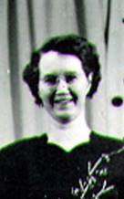

3 – MY MOM – MILDRED HOPE BUSHNELL PORTER:
 My mom was a good mother. She loved her husband and children very much. Mom was a good cook and always fixed good, nutritious meals. I loved the roast beef dinners on Sundays and the cakes with fluffy icing. I remember coming home from school to the smell of homemade bread and was able to eat one or more slices of that good, hot bread.
I loved hearing mom whistle as she worked. I loved going to Samuel's sales with her where she always splurged and bought me so many nice things. (Samuel's was an expensive woman's clothes store in Ogden) Many times she sacrificed for me, spending the money on me instead of her. Mom didn't learn to drive for several years and so I remember waiting across the street at the bus stop and ridding the bus to Ogden to go shopping with Mom and later Mom & Grandma Bushnell. That was great fun. I remember as a child thinking my mother walked so fast. I could hardly keep up with her when we would walk the sidewalks in downtown Ogden.
Mom was a secretary and historian in the primary organization, both in the ward and stake for several years while I was growing up. She loved the Primary organization. She also taught the Beehive girls in MIA. I'm sure she had other positions too, but I can't remember.
Mom never was a very good housekeeper. She said she never learned how - that since she was the oldest child, her mother had her tend her younger brothers and sister while her mother cleaned the house and performed the other household chores. Grandma Bushnell was a very good housekeeper. Mom liked a clean house, but couldn’t seem it keep it that way herself. She didn’t put things away. She would fix a meal and then leave many of the items and dishes out that didn’t need to be put away in the refrigerator. When she would do the dishes, she would just wipe off the cupboard around the items and other things. I liked a clean house and couldn’t stand the clutter. I also think it was born into Georgia and I, like it was Grandma Bushnell, to like a clean home and be able to keep it that way. Many times, when Mom went somewhere for a couple of hours or more, I would hurry and clean the house to surprise her. When she came home, she would walk in, look around and say, "I must be in the wrong house, this doesn't look like my house, it's too clean". I would smile, and she would compliment and praise me for cleaning it so good. That was reward enough for me (Good physiology on Mom's part) However, I didn't think it was fair, when I was growing up, that I had to do so much homework and the boys didn't. They would get things out and not put them away either, so I would get frustrated that the house wouldn't stay clean. Mom and I would clean thoroughly every Saturday, but during the week it would go right back to lots of clutter. Mom would usually have me clean the kitchen as well as help clean the rest of the house. We would change the furniture around many times on Saturdays and I liked that. In the summer, I usually went outside, picked a bouquet of flowers and put them in a vase in the front room.
I remember many times when we saw a car pull up in the drive-way or in front of the house, we would all hurry (at least mom & I) and gather up things in the front room and put them in other rooms, etc., so the front room wouldn't be such a mess when they came to the door. I remember throwing things behind the couch, etc., as we didn't have much time. Maybe that's why I became such a "fast" house cleaner.
It was hard on me growing up to have our house such a mess most of the time. It didn't matter how much I tried to keep the house clean, I couldn't stay on top of it as the boys didn't care and left their toys, books, papers, food dishes & wrappers, etc., etc., all over everywhere. I was embarrassed to bring my friends home from school. Georgia says it was hard for her with this problem - growing up also.
When I had dates, I cleaned and told the boys they were not to mess up the front room until after I left with my date. One night Mom went with me to a mother and daughter party for the MIA. My brothers were home and supposed to tend Georgia & Kim. Kim was in diapers. When I got home they told me that some of my friends (boys) had come to see me. When I saw the mess and the dirty diaper on the front room floor, I was horrified and embarrassed and really upset with Hal and Bryce.
One night when a "special" date was coming, I cleaned and then kept picking up after the boys. Mom finally became upset with me, took me by the shoulders, sat me on the couch and told me to stay there.
Ken said he thought my Mom was a good housekeeper until after we were married because the house was always clean when he came to see me or take me on a date. His mother was an immaculate housekeeper - too immaculate - so he said he probably wouldn't have kept dating me if he had seen the house messy and dirty because he knew the saying - "Like Mother, Like Daughter". I hope I am like my mother in many other ways, however, as she has many virtues and not many faults and weaknesses. None of us are perfect; I know I'm certainly not. Dad realized this later in life too. He always loved Mom very much, but it did bother him about her housekeeping and "hording". Mom said that since she lived through the depression, she can't stand to throw anything out because the day will come when her children and grandchildren may need the clothes to make them over for the children, they will need the bedding, the food, etc., etc., and that may be, but it is a phobia with her. Ken's mom lived through the depression too, and really had a hard time - maybe more so than my mother, but she is so different - she throws too much away.
When Mom was gone to get her hair done, etc., and I would stop by, Dad was sometimes frustrated and upset and would show me all the closets and rooms that were full to the brim because she keeps buying things and won't throw anything out or give to the Deseret Industries.
Dad finally said years later "She is such a wonderful woman and I can't expect her to be perfect. She loves me and is a wonderful wife and mother - so I will just have to overlook her housekeeping". I was proud of dad for this.
Even though Mom wasn't a good housekeeper, she was a hard worker. I think now that Mom probably didn’t have the energy as she had Rheumatic Fever when she was a young girl and that damaged her heart. During the spring we usually planted a garden. We kids helped her weed it. She had raspberries, strawberries and currents that we made jam out of. I didn't like picking the currents as it took so long to get very many since they were so small. We also had fruit trees. So, we were busy in the spring, summer and fall, gardening, harvesting and canning the fruit and vegetables. Mom put bushels and bushels of fruit & vegetables up each year. I disliked doing it as it took so long and made such a mess of the kitchen, but I'm glad I learned how to do it and the value of doing it. I have proceeded to do these things throughout my life also, and Ken & I have taught our children as we had them help us as they were growing up.
I enjoy gardening and working in the yard. I love to see things grow - I love nature. Not many young people do gardening and canning these days because it is so easy to buy it at the store. I do worry that the time will come when they will need to know these skills and be able to do them to feed their families. Our married children are gardening and canning, and I am thankful they are. (At least the ones who can) I was talking with Shellie recently (May 1998) and she said she likes to go out each day and look at her tomato plants to see how much they have grown and also her orange & grapefruit trees. She said she will be glad to get the rest of her garden in, so she can watch it also. Sandi showed me her garden while we were out there last weekend and it looks so good. She has had a garden practically since she was first married. Mike & Becky also have a garden. David & Shauna are just buying a home and David said he will be glad when he can have an orchard & garden. Looks like it paid off to have our children help with gardening, canning, etc., while they were growing up.
Back to Mom - she mended clothes and socks, and always kept herself busy. She liked to read also - so at night her and dad usually read when they were not at meetings.
Mom took me to Samuels sales (Samuels was a nice, but expensive store, but when they had sales, you saved a lot of money on clothe.) and bought me beautiful clothes, when I was a teenager. I knew she was sacrificing other things for me, and I loved her for it and I loved the beautiful clothes she bought me.
(For more information on Mom, refer to the Blue "Byron Porter Family Descendants" book or information in the "Parents" section of this history)
I feel very fortunate to have been raised by wonderful parents who loved their children and taught the gospel to us and set a wonderful example for us by living it. I also feel fortunate to have lived close to my grandparents as I was growing up. They were also wonderful people who loved and lived the gospel.
Grandpa Bushnell would come over each Sunday morning and give us kids a “Sunday nickel”. We thought that was great because we didn’t get an allowance, but this was some money to buy a treat. In those days you could buy two pieces of candy for a penny, a nickel would buy a candy bar, a Popsicle, ice cream on a stick or two nickels would buy a pop. We had a little store/gas station across the street from the church on the north corner. It wasn’t very far since we lived right next to the church. Grandpa would take us, on another day, to spend our nickel many times. Grandpa had a beautiful tenor voice. He and Grandma grew up in Meadow and so even though he had moved to Sunset, people kept asking him to come and sing at their important events, weddings, funerals, etc., in Meadow, Fillmore and the surrounding areas. Because of Grandma’s health and I think because she was shy, and she said she had too much to do to go (Cleaning, laundry, ironing, etc.), she didn’t go with him, so he took one of us children with him. He always stopped in Nephi and bought us hamburgers and shakes. Sometimes just a shake, but that was good enough and I loved traveling too. My mother couldn’t understand grandma not going with Grandpa and, so she made up her mind that whenever my dad wanted her to go someplace with him, she would drop everything and go. She left a dirty house, etc. She said she loved dad and wanted to be with him, which is great, but I wanted a happy medium. I didn’t like leaving if my dishes weren’t done and the house wasn’t clean as I didn’t want to come home to a dirty home, etc. Grandpa sang at Kens and my wedding.
LETTER I WROTE MOM ON MAY 22, 1987
Dear Mom,
Thanks for being such a wonderful mother. I know you’ve always worried about your weight (mainly your stomach) but you didn’t need to, as you have always been beautiful – and such a great example to follow.
I know I’ve told you before, but thanks for the many things you’ve done for me and my family throughout my life, to show you care. The statements you’d make like “Oh, this house is too clean, I must be in the wrong house” after I’d clean the house while you were away, or “You’ll never know how I appreciate you until you have a daughter of your own.”
Thanks for always supporting me – going to my “Dear to my Heart” nights, etc., while I was in M.I.A., encouraging me to get my “Golden Gleaner” award, coming to our children’s blessings, baptisms, talks, etc., encouraging the boys to get their “Eagle” awards, etc.
I remember, as a young girl, riding the bus with you to go shopping in Ogden, running to keep up with you, as you could walk so fast, getting cute clothes at Samuel’s sales & other sales, etc. That was great!
I loved to hear you whistle or sing as you worked around the house. I loved coming home from school to the smell of fresh homemade bread. I loved hearing you and Dad sing as we’d come home from Morgan or other places. My children say the same thing to us, as Ken and I used to sing those same songs that we learned from you, as we’d travel with our children. And Shellie was saying, not long ago, when I was rocking Chelci and singing “This Little Piggy Went to Market” that she remembered me rocking and singing those songs to her. Of course, I did the other children too. I learned them when you sang them to me when I had earaches as a young child.
Thanks for pampering me and being so sweet whenever I’ve been ill. It meant a lot. Thanks for caring enough to call just about each morning (when it wasn’t long distance) to see how we were, for always calling me and my family on their birthdays. We look forward to that call.
Thanks for all the ice cream cones and goodies as we’d go places together. I’ve enjoyed being with you and I’m happy that you want me with you.
Thanks, especially, this past year for all the encouragement, support, both financial and otherwise, help fixing meals, making bread, helping the children with their homework, etc., letting us use your car, (I know you loved to drive that car, so it was really a sacrifice for you and I love you so much for it). I’m not sure I’d have made it through that difficult time if it hadn’t been for you and Dad and the Lord. Thanks so much.
Thanks for all the Sunday dinners, and other meals as well as the many snacks. You’ve always been such an example of loving and caring for your family and others. I hope I’m worthy of your love. You’re so “special”, Mom, and I love you so very much. Mae